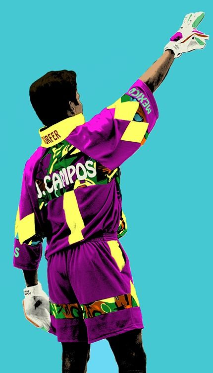

La historia de un portero único
Jorge Campos Navarrete nació el 15 de octubre de 1966 en Acapulco, Guerrero, México. Es conocido por su estilo colorido y su habilidad tanto como portero como delantero, lo que lo convirtió en uno de los jugadores más versátiles y queridos en la historia del fútbol mexicano.
Comenzó su carrera profesional con los Pumas de la UNAM en 1988, donde rápidamente se destacó no solo por su capacidad bajo los tres palos, sino también por su habilidad para marcar goles cuando se le necesitaba como delantero. Su carisma y talento lo convirtieron en una figura icónica del fútbol.
A lo largo de su carrera, Campos jugó para varios clubes en México y en el extranjero, incluyendo el LA Galaxy en Estados Unidos. También fue un miembro clave de la selección nacional de México, participando en múltiples Copas del Mundo.
Jorge Campos dejó una marca imborrable en el fútbol mundial con su estilo inconfundible y su capacidad para sorprender a todos con su versatilidad en el campo. Su legado no solo incluye sus logros y habilidades, sino también su espíritu y amor por el juego, inspirando a futuras generaciones de futbolistas.
Fuera del campo, Campos ha continuado siendo una figura influyente en el fútbol mexicano, trabajando como comentarista y embajador del deporte, siempre con la misma pasión y dedicación que mostró durante su carrera profesional.
